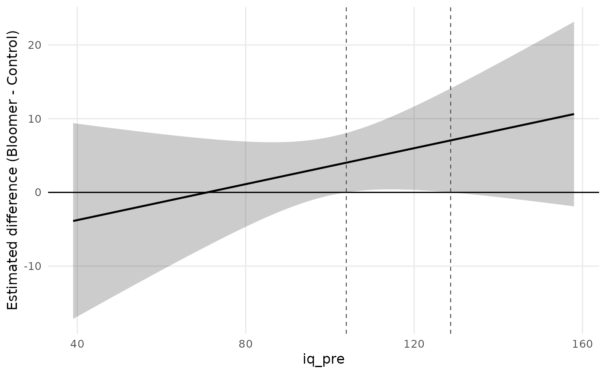
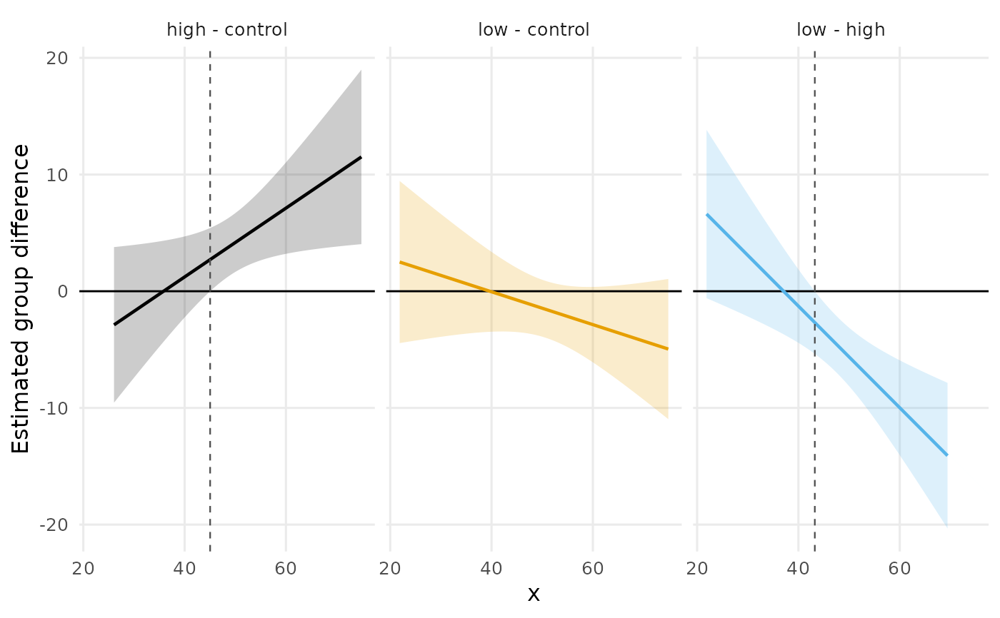

Plot Regions of Significance for a Covariate by Group Interaction
Source:R/plot_regions_of_significance.R
plot_regions_of_significance.RdDraws the estimated group difference \(\hat D(x)\) across the observed range of the covariate, with the confidence band that the region of significance is read from, a reference line at zero, and vertical lines at the boundaries of the region. Wherever the band clears zero the groups differ significantly, so the boundaries are exactly the covariate values at which the band touches the zero line: the plot is the decision rule, which is what makes it the natural report of the analysis.
Usage
plot_regions_of_significance(
x,
data = NULL,
conf_level = 0.95,
method = c("simultaneous", "pointwise"),
xlab = NULL,
ylab = NULL,
title = NULL,
palette = "okabe_ito",
facet = NULL,
n_points = 200L
)Arguments
- x
A result of
regions_of_significance. Alternatively a fittedlmoraov, or a formula withdatasupplied, in which caseregions_of_significanceis called first withconf_levelandmethod.- data, conf_level, method
Passed to
regions_of_significance, and used only whenxis a model or a formula rather than an already computed result.- xlab, ylab
Axis labels. The defaults name the covariate and the group difference.
- title
Optional plot title.
- palette
Character string naming the color palette. Defaults to
"okabe_ito", base R's colorblind-safe Okabe-Ito palette;"tableau"is also available.- facet
Logical. Draw one panel per pair of groups. Defaults to
TRUEwhen there is more than one pair, which keeps the panels from overplotting each other; set it toFALSEto lay the pairs over one another in a single panel.- n_points
Number of covariate values at which the difference and its band are evaluated. Default 200.
Details
The band is \(\hat D(x) \pm t_{crit} \sqrt{\mathrm{Var}[\hat D(x)]}\) with the same critical value used to find the boundaries, so the picture and the table can never disagree. With the default simultaneous critical value (Potthoff, 1964) the band is a simultaneous band: it holds over the whole covariate range at once, which is what licenses scanning it for the covariate values where the groups differ.
The band is drawn over the covariate values actually observed in the two groups. A boundary that falls outside that range is therefore not drawn, deliberately: it is an extrapolation of two fitted lines into a region with no data, and drawing it would invite reading it as a place where something was observed.
References
Johnson, P. O., & Neyman, J. (1936). Tests of certain linear hypotheses and their application to some educational problems. Statistical Research Memoirs, 1, 57–93.
Maxwell, S. E., Delaney, H. D., & Kelley, K. (2027). Designing experiments and analyzing data: A model comparison perspective (4th ed.). Routledge. (See Chapter 9 and its extension on heterogeneity of regression.)
Potthoff, R. F. (1964). On the Johnson-Neyman technique and some extensions thereof. Psychometrika, 29(3), 241–256. doi:10.1007/BF02289721
Author
Ken Kelley kkelley@nd.edu
Examples
# \donttest{
# The Pygmalion teacher-expectancy data: post-test IQ (averaged over
# the two follow-ups) on pretest IQ, by condition. The expectancy
# effect is significant only in a band of pretest IQ values.
data(pygmalion)
pygmalion$iq_post <- (pygmalion$iq_4 + pygmalion$iq_8) / 2
fit <- lm(iq_post ~ iq_pre * treatment, data = pygmalion)
plot_regions_of_significance(fit)

# Three groups: one panel per pair.
set.seed(113)
n <- 150
g <- factor(rep(c("control", "low", "high"), each = n / 3))
x <- rnorm(n, 50, 10)
y <- 2 + 0.5 * x + (g == "high") * (0.4 * x - 15) + rnorm(n, 0, 5)
plot_regions_of_significance(y ~ x * g, data = data.frame(y, x, g))

# }